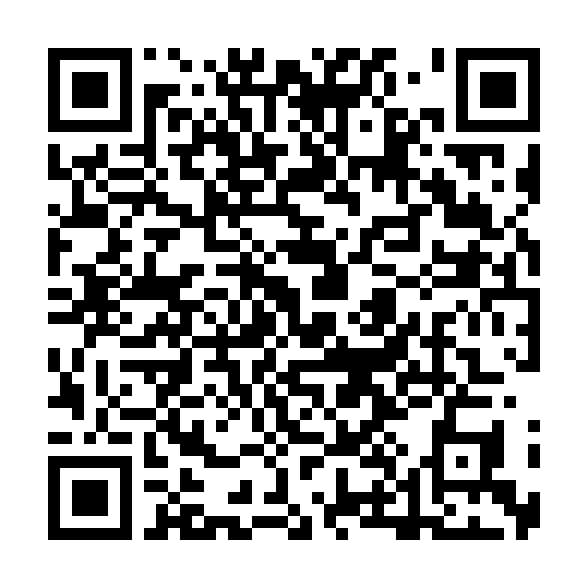

| Mass | Korean Mass | Sunday 9:30 AM | Devotions / Other | Legion of Mary: Before & after weekday and Sunday masses |
|---|---|---|---|---|
| English Mass | Sunday 11:00 AM | Ultreya: 3rd Sunday after Mass |
||
| Weekday Mass | Tue · Thu · Fri 9:30 AM |
Secular Franciscan: 2nd Sunday 1:00 PM |
||
| Confession | Before weekday & Sunday masses 9 AM - 9:25 AM |
Holy Hour: Monthly, after 1st Thursday mass |
||
| Infant Baptism | Contact the church office | Sunday School | Sunday 9:30 – 10:30 AM | |
| Date | Sun School | Priest |
|---|---|---|
| 8/02 | N | Fr. Paul |
| 8/09 | N | Fr. Paul |
| 8/16 | Y | Fr. Philip |
| 8/23 | Y | Fr. Jim |
Please pray for (기도해 주십시오)
윤정의 알퐁소, 이순옥 데레사, 김정희 데레사, 정종락 필립보, 배정례 엘리사벳, 이데이빗 바오로, 이혁주 베드로
Contact the office if there's someone in need of prayer.
📋 Announcements
Liturgy & Key Dates
- 8/2 (Sun) Start of Confirmation Classes (8/2, 8/16, 8/30, 9/6)
- 8/5 (Wed) Wednesday Evening Mass (7:30 PM, Chapel)
- 8/6 (Thu) Holy Hour
- 8/8 (Sat) Northern California Charismatic Conference (St. Michael Korean Catholic Church in San Francisco)
- 8/9 (Sun) Cursillo Secretariat Meeting
- 8/15 (Sat) Solemnity of the Assumption of the Blessed Virgin Mary Mass (9:30 AM, Chapel - replaces August Marian Devotion Mass)
Community Events
| Event | Date/Time | Location |
|---|---|---|
| Basic Christian Faith Community Leaders Meeting | 8/2 (Sun) 10:45 AM - 12:00 PM | Room A |
| Pastoral Council Meeting | 8/2 (Sun) 12:00 PM | Room A |
| Matthew #4 | 8/8 (Sat) 4:00 PM | Room A |
| Mary Queen of Love Curia | 8/9 (Sun) 10:45 AM - 12:00 PM | Room A |
| Luke #2 | 8/9 (Sun) 12:30 PM | Room A |
| Secular Franciscan Order | 8/9 (Sun) 1:00 PM | Room B |
| Altar Servers Meeting | 8/16 (Sun) 12:00 PM - 1:00 PM | Room A / B |
St. Mary's Society 3rd Quarter Group Purchase
- Items: Sesame oil, grains, and other agricultural/marine products.
- Order Period: July 26 - August 3
- Distribution: August 11 (Tue) before and after Mass.
- Proceeds will be donated to the church development fund.
- Contact: 유연호 안나 (612) 849-0873
2026-2027 Sunday School Registration
- Registration Form: https://www.tvkcc.org/sundayschool202526
- Please send your completed registration form to sundayschool@tvkcc.org.
- Send registration fee via Zelle (saenj574@gmail.com) or Venmo (@Yoseb-Shim). Please make sure to include the student's name in the memo field when transferring.
2026-2027 RCIA (Rite of Christian Initiation of Adults)
- Initiation Ceremony (Baptism): 3/28/2027 (Easter Sunday)
- Class Start Date: 9/6 (Sun), 11:00 AM
- Application Deadline: 8/30 (Sun)
- We ask for your interest and cooperation in recruiting prospective catechumens.
St. Joseph's Society (Men's Committee) Member Recruitment
- St. Joseph's Society (Men's Committee) is a gathering of male parishioners between the Young Adult Group and the Joachim Society to share fellowship, participate in various church events, and serve the community. We look forward to your interest and participation.
- We hope for your interest and participation in our faith community where we pray together, serve together, and grow together.
- Contact: 김지용 예로니모 (josephgroup@tvkcc.org)
Sacrament of Confirmation, Confirmation Classes & Adult Education
- Confirmation Ceremony: 9/27 (Sun) during Mass
- Presider: Bishop Simon Joo-young Kim (Bishop of Chuncheon Diocese)
- Confirmation Classes: 8/2, 8/16, 8/30, 9/6 from 2:00 PM to 4:00 PM
- Location: Chapel and Rooms A/B
- Liturgical Rehearsal: 9/20 (Sun) after 11:00 AM Mass in the Church
- Note: Those who have already received Confirmation but wish to attend for faith re-education, please fill out the Google Form below: https://forms.gle/QhZxTbGduwd825Ns5

Scan to
Register
30th Northern California Charismatic Conference
- Theme: “Behold, I make all things new.“ (Rev 21:5)
- Date/time: August 8, 2026 (Sat) 8:30 AM - 6:00 PM
- Location: St. Michael Korean Catholic Church in San Francisco (32 Broad St, San Francisco)
- Speaker: Fr. Moses Dae-woo Kim
- Fee: $30 (lunch and dinner provided)
- Contact: 박민숙 Elisabeth Park (Charismatic Prayer Group)
Charity Committee Seeking Helping Hands
- We would like to look out for neighbors in need of assistance. If you know anyone around you experiencing difficulties, please let us know via the link below. Your small care will gather to practice warm love.
- Request Link: https://forms.gle/K9C5nPqUL7n5Ge2r
Thank-You Gift from Ganggu Church
- Ganggu Church sent 120 bottles of soy sauce as a token of gratitude to our parishioners who participated in the building fund collection. One bottle per household contributing to the annual pledge (114 households). Please pick it up.
🙏 Offertory and Donations
| Mass Offertory | Annual Pledge |
Vocation Promotion |
Bishop's Appeal |
Total | |
|---|---|---|---|---|---|
| Korean | English | ||||
| $2,315.68 | $180 | $1,970 | $90 | $290 | $4,845.68 |
(Please make checks payable to Tri-Valley Korean Catholic Church) The inquiry of the annual pledge is everyone's responsibility.
- Annual Pledge (교무금)
김홍락 (8), 박주암 (7), 배정수 (7-12), 이예진 (7), 장찬 (7), 최교운 (7), 함종식 (8), 함용기 (7), 홍성호 (7,8) - Vocation Promotion (성소 후원)
김홍락 (8), 최교운 (7), 함종식 (8), 홍성호 (7,8) - Bishop's Appeal
김홍락 (8), 장찬 (1-12), 최교운 (7), 함종식 (8), 홍성호 (7,8) - Snack Donation (간식 봉헌)
정병섭 바오로 / 정기숙 안젤라
📜 Pope's Monthly Intention & Giving
August — Pope's Monthly Prayer Intention
For evangelization in the city
Let us pray that in large cities often marked by anonymity and loneliness we find new ways to proclaim the Gospel, discovering creative paths to build community.

Scan QR Code to
Online Donate